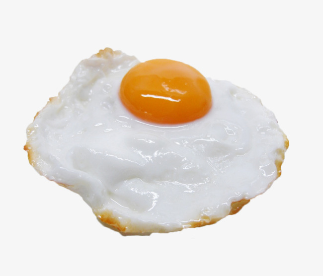

วิธีการทำ

วัตถุดิบ
1. ไข่ไก่สดตรา ซีพี 1 ฟอง
2. น้ำมันพืชหรือน้ำมันเบคอน 1-2 ช้อนโต๊ะ
3. เกลือและพริกไทย สำหรับปรุงรส
วิธีทำ
1. ใส่น้ำมันลงไปในกระทะพอประมาณสำหรับเคลือบกระทะ
2. ตั้งน้ำมันให้ร้อน แล้วตอกไข่ลงไปในกระทะอย่างเบามือ
หรือสามารถใช้พิมพ์วงกลมแล้วตอกไข่ลงไปในพิมพ์
จากนั้นลดความร้อนของเตาลงทันที และให้ทอดไข่ต่อด้วยความร้อนต่ำๆ
3. ทาเนยหรือน้ำมันให้ทั่วด้านบนของไข่เพื่อเพิ่มรสชาติ หรือปรุงรส ด้วยเกลือ และพริกไทย
4. ถ้าปิดฝากระทะ ให้เช็คทุกๆ 3 นาที ควรใช้ฝากระทะมีฝาปิดใสๆ
จะช่วยทำให้เห็นด้านในได้ง่ายขึ้น เมื่อไข่ขาวเซ็ทตัวและรอให้ขอบของไข่ดาวสุก
ให้ใส่น้ำลงไป 1/2 ช้อนชาต่อไข่หนึ่งฟอง ไอน้ำจะทำให้บริเวณด้านบนของไข่สุกอย่างทั่วถึง
5. ทอดไข่จนรู้สึกว่าเนื้อของไข่แดงและไข่ขาวเป็นแบบที่คุณต้องการ